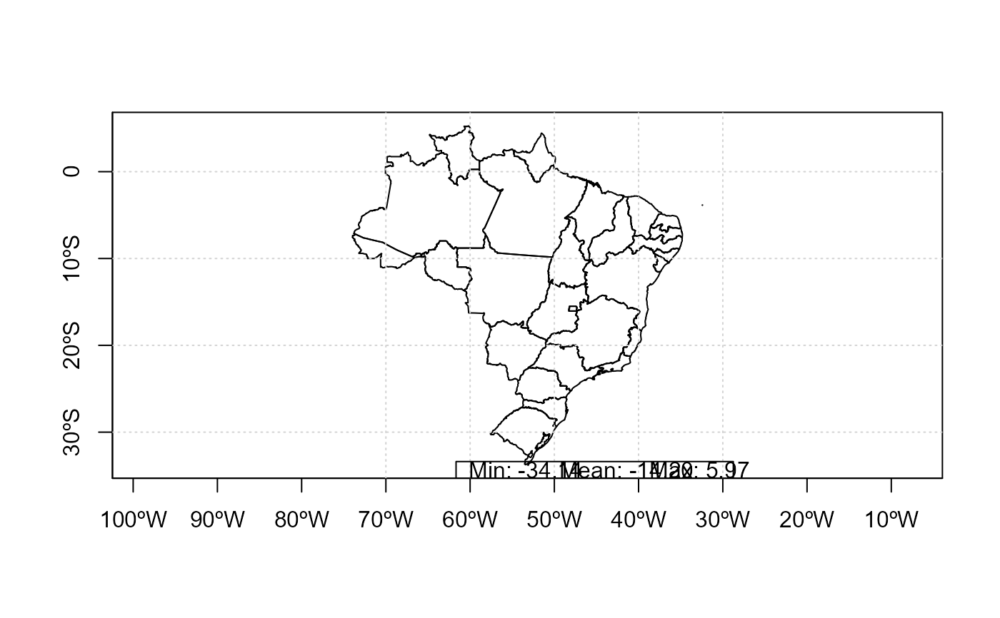

Get the distance in kilometers between two points.
legend_range(
x,
y,
text.width = NULL,
dig = c(2, 2, 2),
xjust = 0.5,
horiz = TRUE,
y.intersp = 0.1,
x.intersp = 0.1,
show.mean = TRUE,
unit = "",
label_mean = "ALL:"
)raster or array
raster or array to mean (x is used only for the range in this case)
Longitude in decimals
vector with number of digits for plot
passed to legend
passed to legend
passed to legend
passed to legend
set TRUE to hide mean value
a string for units
label in case y is provided
for use with raster use before any change of projection
text.width can vary depending on map dimensions
library(raster)
#> Loading required package: sp
#> Warning: package 'sp' was built under R version 4.1.3
br <- shapefile(paste0(system.file("extdata",package="hackWRF"),"/BR_states.shp"),verbose=FALSE)
plot(br)
box()
latitude()
longitude()
grid()
x <- eixport::wrf_get(paste0(system.file("extdata",package="hackWRF"),"/wrfinput_d01"),'XLAT')
legend_range(x)
